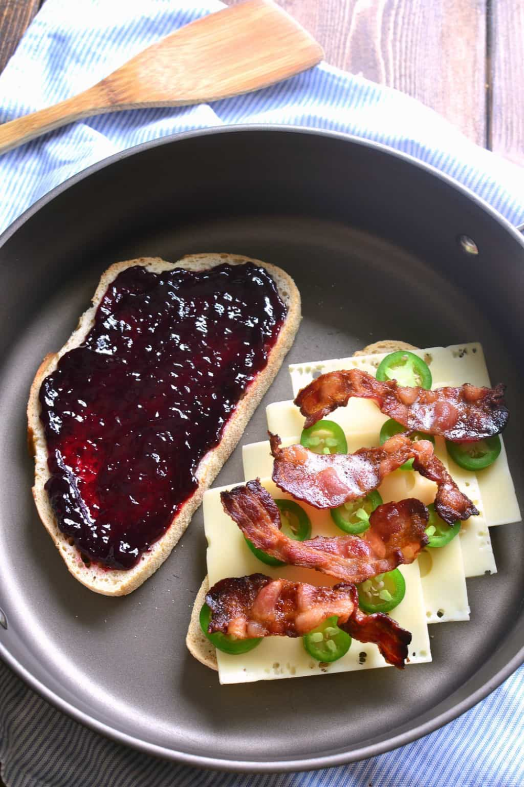
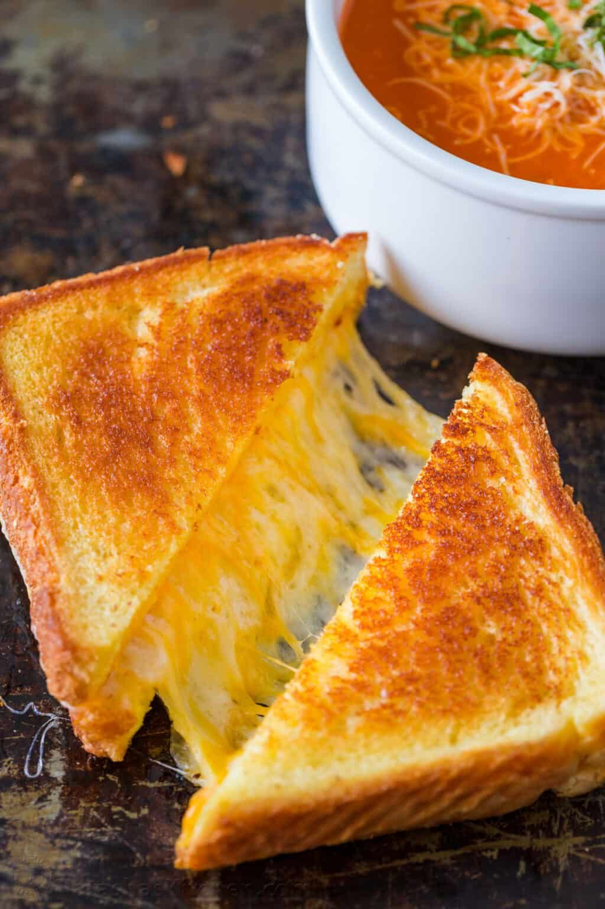

Pharrell Williams' Happy
Why a How To on a Grilled Cheese Sandwich?
I think it is good to be able to cook for yourself, as I know some who cannot, to save their life.
Cooking for oneself allows independant on you to feed you, if it gets to it.
And- so many delicious options!

What does a Grilled Cheese Sandwich mean to me...
Aside from believing all should have one thing to cook for themselves, and the versitility-
A grilled cheese is quick, easy.
Gooey, melty cheese on toasted, buttered bread= Mmmmm!
Need something more, do you wanna pair it with soup? Or salad?
🎵 Or another grilled cheese sandwich? 🎵

Wanna learn more? Google search is fantastic, and so is Pinterest! Then there's this one-